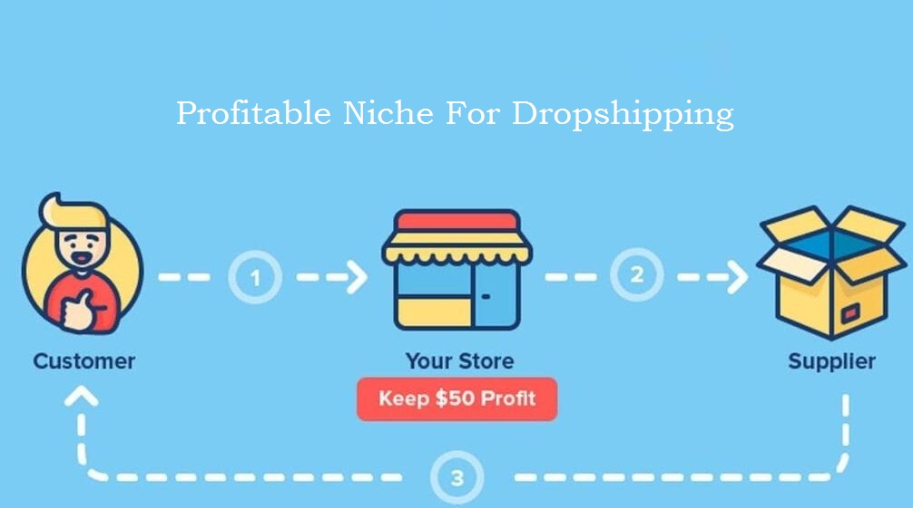

How To Start Dropshipping Business As A Beginner?

Have you ever thought about starting a business where you can make money online without leaving your house? Dropshipping might be the perfect solution for you! This business model allows you to sell products online without actually keeping them in stock, which means you don't have to invest a lot of money upfront.
However, you might be wondering how it all works and if it's the right business model for you. If that's the case, you're in luck! This article will provide you with all the information you need to get started with dropshipping and answer any questions you may have. So, keep reading to learn about dropshipping and start earning online even being a beginner dropshipper!
Table of Content
- What is DropShipping? How it works?
- How To Start A Dropshipping Business?
- How To Find Profitable Niche For Dropshipping?
- What are The Best Dropshipping Suppliers?
- How To Start Freelancing As A Beginner?
- How to Market Your Dropshipping Products?
- How Much Money Can You Make From Dropshipping?
Top 5 Legit Online Earning Sites in 2023
Learn More: Click Here→
What is DropShipping? How it works?
Dropshipping is a type of online retail business model where a seller doesn't keep products in stock but instead purchases products from a third-party supplier and ships them directly to the customer. The seller only orders products from the supplier once an order has been placed by a customer.
The main benefit of dropshipping is that the seller(dropshipper) does not have to invest in inventory or manage a warehouse. This business model is popular because it requires lower upfront costs and allows for more flexibility in terms of product selection and marketing strategies. The seller makes money by charging a higher price for the product than the price at which the supplier is selling it. The difference between the selling price and the supplier price is the profit margin for the seller.
Moreover, The seller partners with a supplier or a manufacturer who has the products in stock. Whenever a customer places an order on the seller's online store, the seller purchases the order from the supplier, who then ships the product directly to the customer.
How To Start A Dropshipping Business?
As mentioned earlier, Dropshipping is a popular online business model that allows entrepreneurs to start an e-commerce store with minimal investment and risk. However, success in dropshipping requires careful research, planning, and execution. It is essential to find reliable suppliers, select profitable products, and implement effective marketing strategies to stand out in a competitive market.
Here's how you can start your first dropshipping business as a beginner:
- Choosing a Profitable Niche:
The primary motive of dropshipping is to gain profit after selling some items to the consumers. When selecting a Niche for dropshipping, it's important to consider factors such as the size of the market, the level of competition, and the availability of reliable suppliers. Additionally, you'll want to research popular products within your chosen niche, as well as trends and changes in consumer behavior.
One fascinating aspect of dropshipping is that it allows you to tap into the global marketplace. You can source products from suppliers located in different parts of the world and offer them to customers all over the world. This opens up a wealth of opportunities and potential customers that would be difficult to reach through traditional brick-and-mortar retail.
choosing a niche for dropshipping can be an exciting and rewarding experience. By focusing on a specific market and offering in-demand products, you can build a successful online business and make a meaningful impact on your customers' lives. - Research and Select Products:
Research is the foundation and one of the key factors that determines the future of every business. For example, you can use data analysis tools to identify products that are trending and in high demand. You can also leverage social media platforms to identify popular products among your target audience. Additionally, you can use customer feedback and reviews to gain insights into what products are popular and what features customers are looking for.
Researching helps you to tap into emerging trends and niches. You might identify a new trend in a specific industry or a niche that has yet to be fully exploited. By being one of the first to offer products in that niche, you can gain a competitive advantage and establish yourself as a leader in that market. - Find reliable suppliers:
Finding reliable suppliers is a crucial aspect of dropshipping, as your supplier will be responsible for shipping the products directly to your customers. One common method of finding suppliers is to use online directories and marketplaces. These platforms allow you to search for suppliers based on product category, location, and other criteria. Additionally, they often provide tools for managing orders and tracking shipments, which can simplify the dropshipping process.
When selecting a supplier, it's important to consider factors such as their reliability, pricing, and shipping times. You may also want to order a sample product to test the quality of the supplier's products and shipping process. You can use some of the trusted online platforms like WooCommerce , alibaba, shopify, wix, AliExpress, etc. - Setting Up Online Presense:
Setting up an online presense for dropshipping means creating an e-commerce website or any social media profiles where you sell products without physically holding any inventory. In dropshipping, you partner with a supplier who handles the inventory and shipping of products to your customers. This means you can start an online business without the need for a physical storefront, inventory management, or shipping logistics.
This will help your new as well as old members to access your products from where you can earn huge sells and profit margins. You can even advertise your website from which you can access more customers. These small steps play magnificiant role to boost your dropshipping business. - Build Relationships With Customers:
Building relationships with customers is crucial for the success of any business, including dropshipping. When you build relationships with your customers, you create a loyal customer base that will keep coming back to your store and refer their friends and family to your business.
Satisfied customers are more likely to refer their friends and family to your business. This helps to bring in new customers and grow your business. When you build relationships with your customers, they are more likely to leave positive reviews about your business. Positive reviews can help to increase your visibility and credibility in the market. Building relationships with your customers also allows you to get feedback on your products and services. This can help you improve your business and offer products that better meet the needs of your customers.
Top Trending Niches For Content Creation in 2023
Learn More: Click Here→
How To Find Profitable Niche For Dropshipping?
Finding a profitable niche for dropshipping requires research and analysis. Here are some steps to help you find a profitable niche for your dropshipping business:
- Research Market Demand.
- Identify Your Interests and Passions.
- Analyze Competition.
- Evaluate Profit Margins.
- Consider Shipping and Supplier Costs.
Some examples of profitable dropshipping niches in 2022 are Babycare products, pet supplies, home decor, fitness equipment, beauty products and many more.
By following these steps, you can start your journey in dropshipping and build a successful business over time.
What are The Best Dropshipping Suppliers?
Though there is no one-size-fits-all answer to this question, as the best dropshipping suppliers for you will depend on your specific business needs and niche. However, here are a few popular dropshipping suppliers that you may want to consider:
- AliExpress.
- Alibaba.
- SaleHoo.
- Worldwide Brands.
- Oberlo.
- Sunrise Wholesale.
- Doba.
- Megagoods.
- Wholesale2b.
It's important to thoroughly research and vet any dropshipping supplier before partnering with them, as not all suppliers are created equal. Look for reviews and ratings from other dropshippers, as well as information on pricing, shipping times, and customer service.
How To Start Freelancing As A Beginner?
Learn More: Click
Here→
How to Market Your Dropshipping Products?
Social media is a great way to reach potential customers and promote your dropshipping products. You can create business pages on platforms like Facebook, Instagram, and Twitter to showcase your products and engage with your audience. Consider running targeted ads to reach a wider audience, and use influencer marketing to tap into the followers of popular social media personalities in your niche. You can also create engaging content, like photos, videos, and memes, that showcase your products and generate interest among your followers.
Another way to market the store and products is content marketing. It involves creating high-quality content that provides value to your target audience. This can include blog posts, videos, infographics, and other types of content that educate, inspire, or entertain your audience. By creating content that's relevant to your products, you can attract potential customers who are interested in your niche. For example, if you sell fitness equipment, you could create a blog post about the benefits of strength training, or a video that demonstrates how to use your products. You can then share this content on social media, email newsletters, and other channels to attract potential customers and build your brand.
When creating content, it's important to focus on providing value to your audience, rather than just promoting your products. By creating helpful, informative content, you can build trust with your audience and establish yourself as an authority in your niche. This can help you attract more customers in the long run, as people are more likely to buy from businesses they trust and respect.
How Much Money Can You Make From Dropshipping?
The amount of money you can make from dropshipping will depend on a variety of factors, including the products you're selling, your profit margins, your marketing strategy, and your ability to scale your business.
As a beginner dropshipper, you may earn a few hundred to a few thousand dollars per month initially, depending on your efforts and the factors mentioned above. It's important to be patient, persistent, and willing to learn from your mistakes as you build your business.
Successful dropshippers can earn anywhere from a few thousand to several hundred thousand dollars per month, depending on the niche, products, and marketing strategies. However, It's important to continue to adapt and innovate in order to maintain your earnings over time.
If you're interested in pursuing dropshipping as a business model, it's important to set realistic expectations and be prepared to put in the work to make it successful. Focus on finding high-quality products, building a strong brand, and providing excellent customer service, and you'll be more likely to succeed over the long term.
Quick Ways To Make Money Online From Home
Learn More: Click Here→